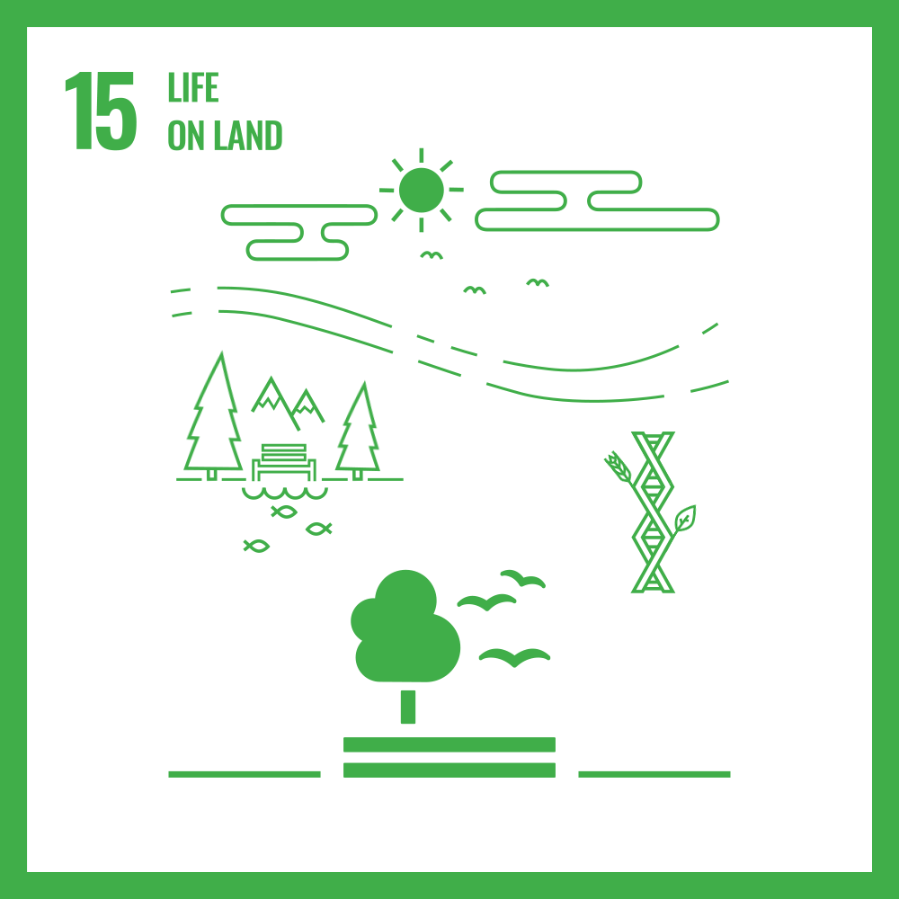

1. No
Poverty:
TARGETS-
1.1 End poverty in all its forms everywhere.
1.2 Eradicate extreme poverty (people living on less than $1.90 a day) and reduce the number of people living in poverty.

1.2 Eradicate extreme poverty (people living on less than $1.90 a day) and reduce the number of people living in poverty.
2. Zero
Hunger:
TARGETS-
2.1 End hunger, achieve food security, and promote sustainable agriculture.
2.2 Ensure everyone has sufficient, safe, and nutritious food year-round.

2.2 Ensure everyone has sufficient, safe, and nutritious food year-round.
3. Good Health and Well Being:
TARGETS-
3.1 Ensure healthy lives and promote well-being for all at all ages.
3.2 This goal addresses various health issues and access to healthcare services.

3.2 This goal addresses various health issues and access to healthcare services.
4. Quality
Education:
TARGETS-
4.1 Ensure inclusive and equitable quality education and promote lifelong
learning opportunities for all.
4.2 This goal aims to provide free, equitable, and quality primary and secondary education.

4.2 This goal aims to provide free, equitable, and quality primary and secondary education.
5. Gender
Equality:
TARGETS-
5.1 Achieve gender equality and empower all women and girls.
5.2 This goal seeks to eliminate all forms of discrimination and violence and promote access to education and healthcare.

5.2 This goal seeks to eliminate all forms of discrimination and violence and promote access to education and healthcare.
6. Clean Water and Sanitation:
TARGETS-
6.1 Ensure availability and sustainable management of water and
sanitation for all.
6.2 This goal aims to provide universal access to safe and affordable drinking water, sanitation, and hygiene.

6.2 This goal aims to provide universal access to safe and affordable drinking water, sanitation, and hygiene.
7. Affordable and Clean Energy:
TARGETS-
7.1 Ensure access to affordable, reliable, sustainable, and modern energy
for all.
7.2 This goal focuses on increasing the share of renewable energy in the global energy mix and improving energy efficiency.

7.2 This goal focuses on increasing the share of renewable energy in the global energy mix and improving energy efficiency.
8. Decent Work and Economic Growth:
TARGETS-
8.1 Promote sustained, inclusive, and sustainable economic growth, full
and productive employment, and decent work for all.
8.2 This goal emphasizes the importance of economic growth that benefits everyone.

8.2 This goal emphasizes the importance of economic growth that benefits everyone.
9. Industry,Innovation and Infrastructure:
TARGETS-
9.1 Build resilient infrastructure, promote inclusive and sustainable
industrialization, and foster innovation.
9.2 This goal encourages investment in infrastructure and innovation.

9.2 This goal encourages investment in infrastructure and innovation.
10. Reduced
Inequalities:
TARGETS-
10.1 Reduce inequality within and among countries.
10.2 This goal encourages investment in infrastructure and innovation.

10.2 This goal encourages investment in infrastructure and innovation.
11. Sustainable Cities and
Communities:
TARGETS-
11.1 Make cities and human settlements inclusive, safe, resilient, and
sustainable.
11.2 This goal focuses on urban development that enhances safety and sustainability.

11.2 This goal focuses on urban development that enhances safety and sustainability.
12. Responsible Consumption & Production:
TARGETS-
12.1 Ensure sustainable consumption and production patterns.
12.2 This goal promotes resource and energy efficiency, sustainable infrastructure, and access to basic services.

12.2 This goal promotes resource and energy efficiency, sustainable infrastructure, and access to basic services.
13. Climate Action:
TARGETS-
13.1 Take urgent action to combat climate change and its impacts.
13.2 This goal emphasizes the need for global cooperation to address climate change.

13.2 This goal emphasizes the need for global cooperation to address climate change.
14. Life Below Water:
TARGETS-
14.1 Conserve and sustainably use the oceans, seas, and marine resources
for sustainable development.
14.2 This goal addresses the conservation of marine ecosystems, reducing marine pollution, and ensuring sustainable fishing practices.

14.2 This goal addresses the conservation of marine ecosystems, reducing marine pollution, and ensuring sustainable fishing practices.
15. Life on Land:
TARGETS-
15.1 Protect, restore and promote sustainable use of terrestrial
ecosystems, sustainably manage forests, combat desertification, and
halt and reverse land degradation and halt biodiversity loss.
15.2 This goal focuses on protecting ecosystems and promoting sustainable land management.
15.2 This goal focuses on protecting ecosystems and promoting sustainable land management.

16. Peace,Justice And
Strong Institutions:
TARGETS-
16.1 Promote peaceful and inclusive societies for sustainable development,
provide access to justice for all and build effective, accountable and
inclusive institutions at all levels.
16.2 This goal emphasizes the importance of rule of law, human rights, and effective governance.

16.2 This goal emphasizes the importance of rule of law, human rights, and effective governance.
17. Partnership For
The Goals:
TARGETS-
17.1 Strengthen the means of implementation and revitalize the Global
Partnership for Sustainable Development.
17.2 This goal focuses on enhancing cooperation among governments, the private sector, and civil society.

17.2 This goal focuses on enhancing cooperation among governments, the private sector, and civil society.